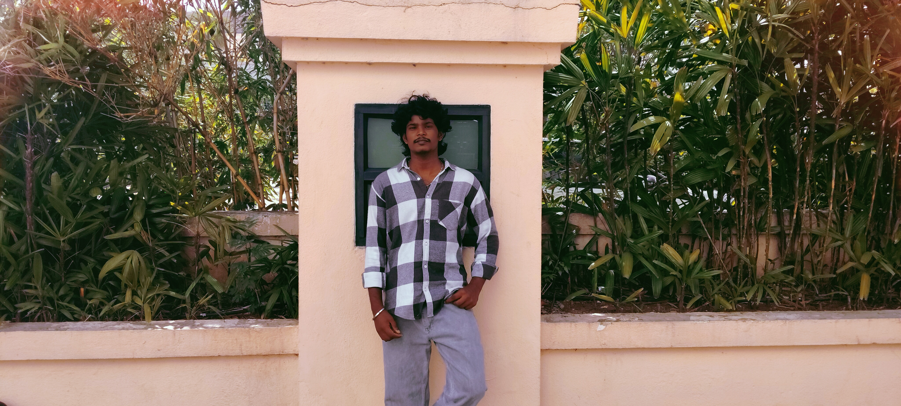

Hello — I'm Kalidasan.S
I build clean, accessible, and responsive websites using only HTML & CSS. I care about good contrast, clear information and pixel-perfect layouts.
About me
I focus on building responsive interfaces with semantic HTML and modern, accessible CSS. I like contrast, readable typography, and clean component-based structure. This portfolio is built with only HTML and CSS — no JavaScript.
Outside of coding, I love exploring new tech, designing UI mockups, and collaborating with people on creative ideas. My goal is
ces with semantic HTML and modern, accessible CSS. I like contrast, readable typography, and clean component-based structure. This portfolio is built with only HTML and CSS — no JavaScript.
Outside of coding,
See my work Get in touch